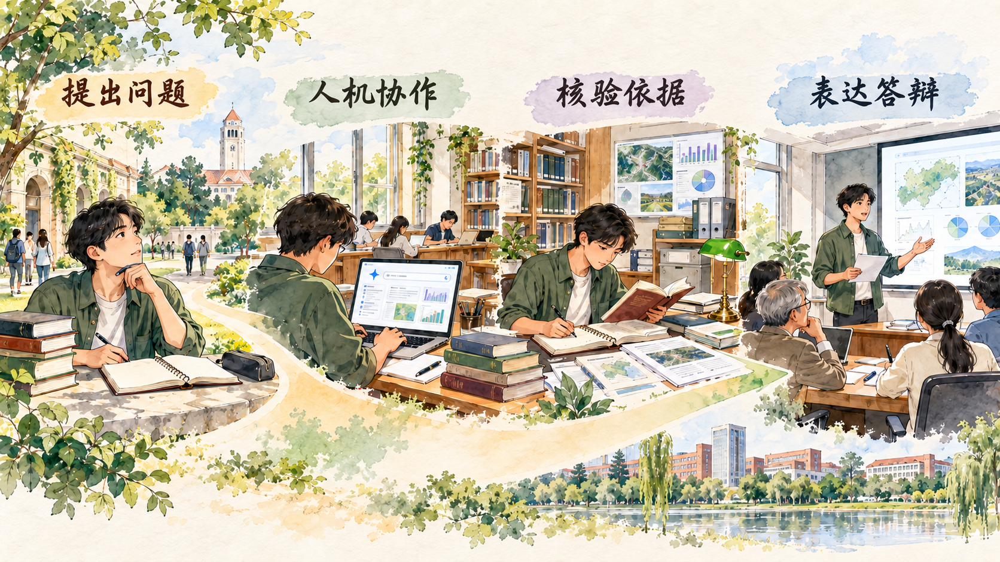

教育怎样同时服务人的成长和国家发展
教育连接个人成长、社会进步和民族复兴。本节从教育的基础作用进入立德树人根本任务，再落到办好人民满意的教育。判断教育强国，既要看学校数量、入学机会和办学条件，也要看培养什么人、怎样培养人、为谁培养人，以及教育能否支撑人的全面发展和中国式现代化。
一、教育是民族振兴、社会进步的基石
教育是国之大计、党之大计。它通过知识传播、能力培养和价值塑造，为个人发展提供基础，也为经济社会发展积累人力资本、创新能力和文明素养。教育普及程度提高，使更多人获得学习与发展的机会；高等教育、职业教育和继续教育共同支持产业升级、公共治理和终身学习。
建设教育强国具有鲜明的中国属性。我国要建设的是中国特色社会主义教育强国，以坚持党对教育事业的全面领导为根本保证，以立德树人为根本任务，以为党育人、为国育才为根本目标，以服务中华民族伟大复兴为重要使命，以教育理念、体系、制度、内容、方法、治理现代化为基本路径，以支撑引领中国式现代化为核心功能，最终办好人民满意的教育。
二、落实立德树人根本任务
立德树人回答教育的根本方向。人才首先是具体的人。专业知识、技术能力和创新精神需要同理想信念、社会责任、学术诚信和法治意识结合。大学课程既要帮助学生“会做事”，也要帮助学生理解为什么做、为谁做、对社会产生什么影响。
人工智能进入学习过程，使这一问题更加具体。学生可以用 AI 检索线索、梳理材料、调试代码和辅助制图，也必须亲自完成问题界定、关键判断、证据核验和责任承担。教育评价需要观察学生真实形成的能力，使工具提高学习效率，同时保留学习者的主体性。

案例研究｜毕业论文可以用 AI 到哪一步
大学生使用生成式人工智能时，常会遇到一个具体问题：AI 可以帮助检索文献、检查代码，也可以在几秒内生成一段看似完整的论述，毕业论文的能力边界应当怎样划定？2024 年，复旦大学发布本科毕业论文中使用 AI 工具的试行规定，把这个问题转化为可以执行的学术规范。学校强调，毕业论文需要真实考察学生的研究创新能力、批判性思维、写作表达能力、专业知识应用和学术诚信。
规定首先列出允许辅助的环节。学生在事先征得指导教师同意的情况下，可以让 AI 帮助检索和整理文献、管理关键词与参考文献，推荐统计图表类型，辅助常规代码编写、调试和错误检查，以及检查参考文献格式。学生需要逐条核实文献的存在性与内容，亲自测试代码，使用真实数据制作图表，并对工具建议作出专业判断。
规定同时列出由学生承担的核心任务。研究选题、研究意义、创新点、论文结构、研究假设、创新性方法和算法框架，需要体现学生自己的思考；原始实验、统计和调查数据由真实研究过程产生；数据分析、结果讨论、结论和论文正文由学生完成。论文正文、致谢、翻译和语言润色也纳入限制范围，使最终文本能够反映学生本人的写作和表达能力。涉及保密内容时，学生不得向生成式人工智能系统上传相关材料；答辩和评审人员同样要保护论文内容并独立履行评价责任。
| 论文环节 | 规定中的处理方式 | 主要考察的能力 |
|---|---|---|
| 文献检索、关键词和参考文献管理 | 可以辅助，学生核对原文与真实性 | 信息检索、来源辨别、知识整理 |
| 常规代码编写、调试和图表类型推荐 | 可以辅助，学生测试代码并解释结果 | 方法应用、程序理解、结果核验 |
| 选题、研究问题、假设和创新点 | 由学生完成 | 问题意识、研究设计、创新能力 |
| 原始数据、数据分析和结果讨论 | 由真实研究过程产生并由学生分析 | 实证能力、专业判断、证据解释 |
| 论文正文、结论与答辩 | 由学生完成并承担责任 | 写作表达、逻辑论证、现场回应 |
透明披露使工具使用过程可以检查。学生需要说明工具名称和版本、使用时间和目的、生成的内容或建议、实际采用的位置，并保存使用 AI 之前的研究材料。指导教师可以沿着开题报告、资料笔记、代码版本、实验记录、论文修改和现场答辩观察学生怎样形成结论。学生仍然是论文作者，对事实、引文、数据、观点和学术规范承担完整责任。
例如，一名学生研究平台消费中的价格差异。AI 可以帮助组合检索关键词、检查一段数据清洗代码和推荐图表类型。学生要亲自确定研究对象和比较方法，说明样本怎样获得，核对代码是否把新老用户分组写反，并结合原始数据解释价格差异。答辩教师还可以要求学生现场说明变量、复现图表或解释一次异常结果。技术工具提高资料处理效率，研究问题、证据判断和结论责任仍由学生承担。
这套条款服务于五类培养目标。首先，检索后核对原文，培养信息辨别和证据意识；其次，解释代码和方法，培养专业应用能力；再次，独立提出问题和形成结论，保护研究创新能力；进一步，披露工具使用过程，培养学术诚信；最后，通过答辩和过程材料呈现本人贡献，培养批判性思维、写作表达和责任意识。立德树人在这里落实为一套可执行、可检查的学习过程。
讨论题
- 如果 AI 帮你形成了论文提纲，你需要完成哪些工作，才能把它转化为自己的研究成果？
- 同样是使用 AI，为什么检索关键词和直接生成研究结论在能力考察中的位置不同？
- 请为一门大学课程设计一项“可以使用 AI、又能看出学生真实能力”的作业。
资料来源：复旦大学《发布国内高校首个 AI 新规》，2024 年 12 月 20 日；复旦大学《复旦大学关于在本科毕业论文（设计）中使用 AI 工具的规定（试行）》，2024 年 9 月 24 日教务处处务会通过。
三、办好人民满意的教育
人民满意的教育以公平和质量为重要尺度。公平要求保障不同地区、家庭和群体平等接受教育的权利，使教育发展成果更多更公平惠及全体人民。质量要求学校提供适合学生成长和社会需要的教育，使学生获得知识、能力、品格和身心发展的共同提升。
办好人民满意的教育，需要建设高质量教育体系。基础教育重在夯实全面发展基础，职业教育重在产教融合、校企合作和技术技能培养，高等教育重在提高人才自主培养质量和原始创新能力，继续教育为学习型社会和终身发展提供支持。不同类型教育各有任务，又通过升学、就业、培训和继续学习形成连接。
教育现代化还体现在理念、内容、方法和治理方式上。数字技术可以扩大优质资源覆盖、支持个性化学习和教师专业发展；课程、教师、评价和治理共同决定技术怎样进入教育。衡量一项教育改革，需要同时观察受教育机会、学习过程、能力形成和发展结果。
新闻摘录｜联合国教科文组织提出学生 AI 能力的四个维度
2024 年 9 月 3 日，联合国教科文组织在“数字学习周”期间发布面向学生和教师的两套人工智能能力框架。发布背景是生成式人工智能快速进入学校，而许多国家仍缺少系统的能力标准。联合国教科文组织把 AI 能力放在教育权利、人的能动性、公平、透明、隐私和责任框架中考察，主张学生从掌握数字工具进一步发展为能够理解、判断和设计人工智能应用的人。
“以人为本”强调学生在与 AI 互动时保持人的能动性与责任，知道何时采用工具、何时作出自己的判断；“人工智能伦理”要求理解安全、隐私、公平、透明和社会影响；“技术与应用”关注基本原理、数据、模型以及工具使用；“人工智能系统设计”要求学生能够界定问题、组织方案、测试效果并在反馈中迭代。四个维度共同把学生定位为负责任的使用者和共同创造者。
框架还按照“理解、应用、创造”设置进阶层次。初学者需要知道生成式 AI 怎样形成回答以及可能出现哪些偏差；进入应用层，要能选择合适工具、保护个人信息、核验输出并完成任务；进入创造层，则要面向真实问题设计解决方案，评估对不同群体和环境的影响。能力由知识、行动和责任共同构成。
| 能力维度 | 学生需要理解什么 | 可以开展的学习活动 |
|---|---|---|
| 以人为本的思维 | 人决定目标、解释结果并承担责任 | 比较人和 AI 在一次课程任务中的分工，说明最终判断由谁作出 |
| 人工智能伦理 | 隐私、公平、安全、透明和社会影响 | 检查一项校园 AI 应用会收集哪些数据，哪些群体可能受到不同影响 |
| 人工智能技术与应用 | 数据、模型、训练、输出和工具边界 | 对同一问题使用不同提示与资料，比较答案并追溯证据 |
| 人工智能系统设计 | 从界定问题到设计、测试和迭代方案 | 围绕校园真实问题制作小型原型，根据用户反馈修改 |
例如，学生准备分析校园食堂的食物浪费问题。在理解层，他需要知道照片、问卷和消费数据各自包含什么信息，并识别其中的隐私要求；在应用层，他可以让 AI 协助整理公开资料和编写统计代码，再抽查原始记录、复算关键指标；在创造层，他要和同学界定问题，设计调查与分类标准，形成减少浪费的方案，并向食堂管理者解释依据。试行后还要比较实际变化和学生反馈，再调整方案。AI 提供工具，学生完成问题判断、证据核验和社会沟通。
教师框架设置五个维度：以人为本的思维、人工智能伦理、人工智能基础与应用、人工智能教学法、人工智能促进专业学习。教师需要理解工具原理与风险，选择适合课程目标的使用方式，设计能够看到学生思考过程的活动，保护学生权益，并通过专业学习持续更新教学能力。例如，教师可以把一次性提交的成品作业改为“问题说明—资料清单—提示记录—事实核验—口头答辩”，使学生的思考过程进入评价。
联合国教科文组织还把能力框架同实施条件联系起来。学校需要提供基本的网络与学习机会，课程要跨越科学技术与人文社会科学，技术设计要遵循伦理要求，AI 的能源和环境影响也应进入教育讨论。学生能力、教师能力、课程评价和学校治理共同推进，人工智能才能成为促进学习与人的发展的教育工具。
讨论题
- 在四个学生 AI 能力维度中，你认为大学新生最容易忽略哪一个？请用一次真实学习经历说明。
- 如果一门课只考察“生成结果好不好看”，会遗漏哪些能力？
- 请用“理解—应用—创造”三个层级，为本专业设计一条 AI 学习进阶路线。
资料来源：UNESCO, “What you need to know about UNESCO’s new AI competency frameworks for students and teachers,” 2024-09-03。中文翻译与节译。